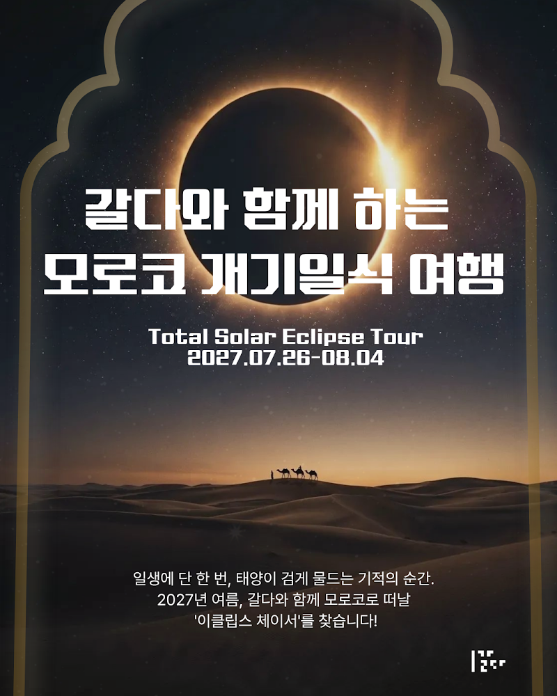

프로그램 상세 안내
일생에 단 한 번, 2027 모로코 개기일식 탐험 🇲🇦🌘
여러분의 버킷리스트에는 어떤 여행이 담겨 있나요?
일생에 단 한 번, 태양계 규모의 거대한 이벤트 ‘개기일식(Total Solar Eclipse)’의 감동을 사하라의 낭만이 숨 쉬는 모로코에서 마주하는 시간.
과학콘텐츠 하우스 갈다와 함께 2027년 여름으로 미리 떠날 준비를 시작합니다.
갈다의 여행은 유명 관광지만 찍고 도는 흔한 패키지여행이 아닙니다.
사하라의 낭만이 숨 쉬는 모로코부터 지브롤터 해협을 건너 스페인 남부로 이어지는 황금빛 여정을
천문학자이자 갈다 대표인 이명현 박사, 전세계를 여행하며 그림그리는 드로잉작가 어슬렁(이미영)과 동행하며
우주적 경이로움을 마주하는 '조금 느리고 깊이 있는' 갈다만의 여행입니다.
▶︎ 여행개요
🗓 일정: 2027. 7. 26(월) ~ 8. 4(수) (한국 도착 8. 5)
📍 여행지: 마라케시 - 카사블랑카 - 라바트 - 탕헤르 - 마드리드
💳 판매가: 10,400,000원 부터~ (에어프랑스 왕복 항공권, 전 일정 호텔 숙박 포함/ 전 일정 투어버스 및 스페인 고속열차(1회), 식사(12식), 현지 가이드, 여행자 보험 제공)
⚡️ 얼리버드 특가: 9,950,000원 부터~ (~12월 6일까지, 선착순 제공) ⚡️
** 싱글차지(970유로), 개인 경비와 일정에 포함되지 않는 식비는 불포함사항입니다. **
** 예약확정 후 실시간 항공권 발권됩니다. 신청일에 따른 항공권 가격 변동이 있을 수 있습니다. **
상품 상세 이미지는 조금만 기다려 주세요. ...
Q. 2027년 개기일식 관측 시간이 가장 긴 곳은 이집트(룩소르)로 알고 있습니다. 왜 이집트가 아닌 모로코로 가나요?
A. 가장 큰 이유는 참가자분들의 ‘건강과 안전’, 그리고 ‘쾌적한 관측 환경’을 확보하기 위해서입니다.
관측 시간이 약 1분 30초가량 더 길다는 이집트의 장점이 있지만, 현실적으로 일반 여행자가 감당하기 어려운 단점들이 존재합니다.
1. 40~45도에 육박하는 폭염 (온열질환 등 안전사고 위험)
2027년 개기일식은 한여름인 8월 2일에 발생합니다. 이 시기 이집트 룩소르를 비롯한 주요 관측 지대의 한낮 기온은 보통 41℃~45℃ 이상까지 치솟습니다.
개기일식 관측은 태양이 완전히 가려지는 그 짧은 순간뿐만 아니라, 달이 태양을 가리기 시작하고 빠져나가는 부분일식 과정까지 포함해 야외에서 최소 3~4시간 이상 대기해야 합니다. 그늘조차 부족한 이집트 사막에서 40도가 넘는 폭염과 강렬한 햇빛에 장시간 노출되는 것은 일사병, 열사병 등 심각한 온열질환(안전사고)으로 직결될 위험이 매우 큽니다.
2. 탕헤르(모로코)의 쾌적한 지중해성 기후
반면, 저희가 개기일식 관측지로 선정한 모로코 북부 항구도시 '탕헤르(Tangier)'의 8월 기온은 최고 28℃~30℃ 내외로 쾌적한 지중해성 기후를 띱니다. 지중해와 대서양에서 불어오는 선선한 바닷바람 덕분에, 야외에서 수 시간 대기하더라도 체력 소모나 안전사고 걱정 없이 여유롭게 천문 이벤트를 즐길 수 있습니다. 또한, 전 세계에서 몰려드는 극심한 인파를 피해 쾌적한 관측 장소를 섭외하여 최적의 환경을 제공합니다.
3. '극한의 생존 여행'이 아닌 '깊이 있는 품격 여행'
개기일식 관측을 위해 전세계 사람들이 몰리는 이집트의 극한 환경은 숙소, 냉방, 화장실, 식수 등 인프라 부족 문제와 겹쳐 체력적으로 극심한 고통을 수반하는 '생존 투어'가 될 확률이 높습니다. '과학콘텐츠 하우스 갈다'가 추구하는 여행은 거대한 우주 이벤트 앞에서 내면을 성찰하는 '안전하고 깊이 있는 여행'입니다. 치안이 안정적이고, 전 일정 5성급 호텔 숙박 및 스페인과의 매끄러운 연계가 가능한 모로코 루트야말로 이 철학을 실현할 수 있는 완벽한 선택지입니다.